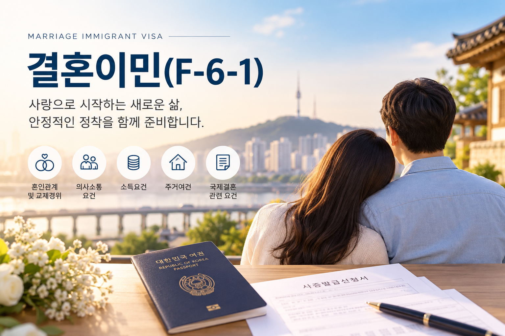
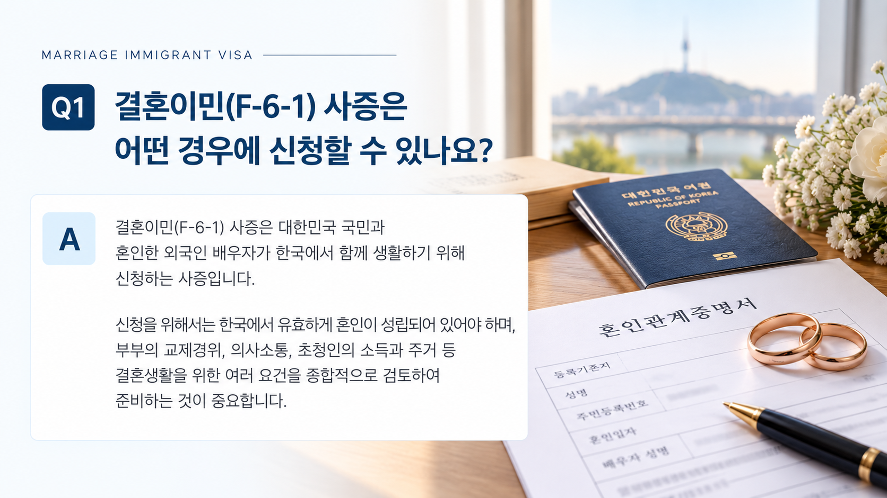
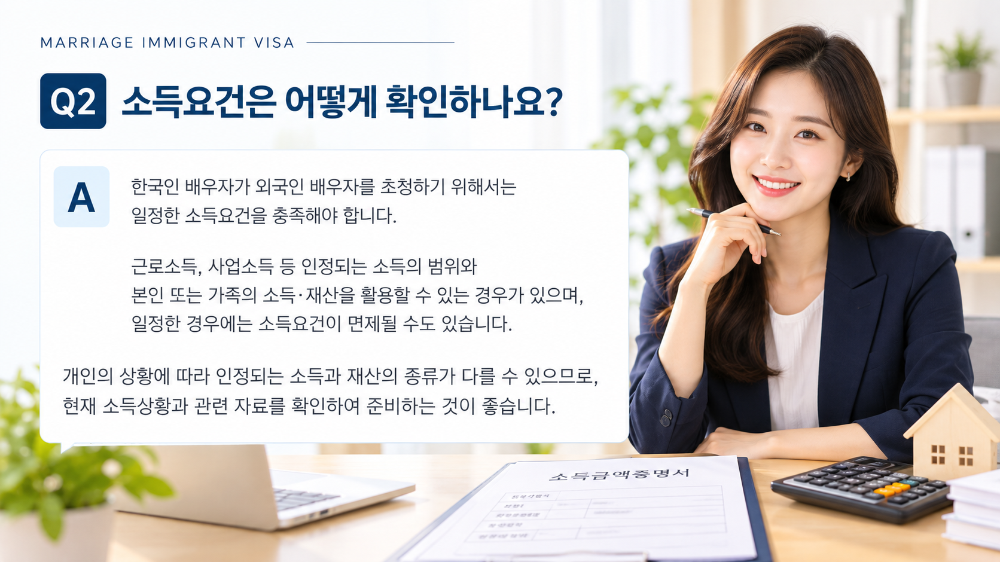
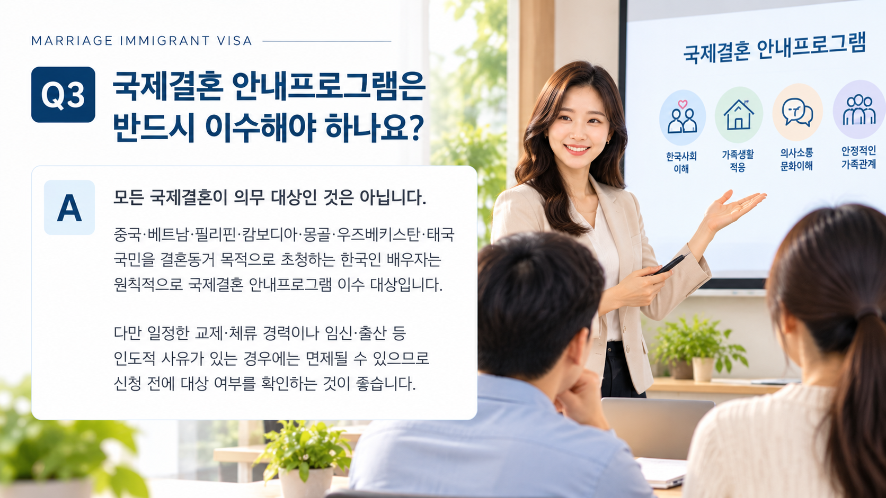

01. 결혼이민(F-6-1)이란?
결혼이민(F-6-1)은 대한민국 국민과 혼인한 외국인 배우자가 한국에서 혼인생활을 하기 위해 신청하는 결혼이민 체류자격입니다.
법률상 혼인이 성립되어 있다는 사실만으로 사증이 자동 발급되는 것은 아니며, 실제 결혼생활을 위한 여러 요건을 함께 심사하게 됩니다.
02. 신청 전에 확인할 주요 사항
| 구분 | 주요 확인사항 |
|---|---|
| 혼인관계 | 적법한 혼인 성립 여부 |
| 교제경위 | 두 사람이 만나 혼인에 이르게 된 과정 |
| 의사소통 | 부부가 서로 의사소통할 수 있는지 여부 |
| 소득 | 결혼생활을 유지할 수 있는 소득요건 |
| 주거 | 부부가 함께 생활할 주거여건 |
| 기타 | 국제결혼 안내프로그램 등 개별 신청요건 |

03. 혼인관계와 교제경위
결혼이민 사증 심사에서는 혼인이 적법하게 성립되어 있는지와 함께 두 사람이 실제로 어떠한 과정을 거쳐 만나고 혼인하게 되었는지도 중요한 확인사항이 됩니다.
따라서 신청인의 상황에 따라 혼인관계와 실제 부부관계를 확인할 수 있는 자료를 준비하게 됩니다.
04. 의사소통 요건
부부가 결혼생활을 지속하기 위해 서로 의사소통할 수 있는지 여부도 확인 대상입니다.
의사소통 가능 여부는 한국어 능력만으로 판단하는 것이 아니라 부부가 사용하는 언어, 과거 체류경력 등 신청인의 상황에 따라 확인방법이 달라질 수 있습니다.

05. 소득과 주거요건
소득요건
외국인 배우자를 초청하는 한국인 배우자는 원칙적으로 결혼생활을 유지할 수 있는 일정한 소득요건을 충족해야 합니다.
다만 인정되는 소득과 재산의 범위, 가족의 소득·재산 활용 여부, 면제사유 등은 신청인의 상황에 따라 달라질 수 있으므로 실제 신청 전 확인이 필요합니다.
주거요건
부부가 입국 후 함께 생활할 주거지가 마련되어 있는지도 확인합니다. 주거지의 소유 또는 임차관계 등 실제 사용할 수 있는 주거인지 확인할 수 있어야 합니다.

06. 국제결혼 안내프로그램
모든 국제결혼이 동일하게 국제결혼 안내프로그램의 의무이수 대상이 되는 것은 아닙니다.
현재 법무부가 정한 국가의 국민을 결혼동거 목적으로 초청하려는 한국인 배우자는 원칙적으로 프로그램 대상이 됩니다.
현재 대상 국가
중국 · 베트남 · 필리핀 · 캄보디아 · 몽골 · 우즈베키스탄 · 태국
다만 교제·체류경력이나 임신·출산 등 일정한 사유가 있는 경우에는 면제 여부를 별도로 확인할 필요가 있습니다.
※ 국제결혼 안내프로그램 대상 및 운영기준은 변경될 수 있으므로 실제 신청 시점의 법무부 안내를 확인해야 합니다.
07. 결혼이민 사증 준비 절차
신청인의 국적과 관할 재외공관, 혼인경위 및 체류이력 등에 따라 추가로 요구되는 자료가 있을 수 있으므로 실제 신청 전에는 관할 재외공관의 최신 안내를 함께 확인하는 것이 필요합니다.
08. 신청 전에 특히 주의할 점
- 혼인신고가 완료되었다고 사증이 자동 발급되는 것은 아닙니다.
- 부부의 교제경위와 실제 혼인관계를 설명할 수 있어야 합니다.
- 의사소통·소득·주거 등 신청요건을 사전에 확인하는 것이 좋습니다.
- 신청인의 과거 체류이력이나 배우자 초청이력 등에 따라 추가 검토가 필요할 수 있습니다.
- 국적과 재외공관에 따라 요구되는 서류가 달라질 수 있으므로 최신 공관 안내를 확인해야 합니다.
결혼이민(F-6-1) 신청을 준비하고 계신가요?
먼저 자가진단으로 주요 준비사항을 확인해 보시거나 현재 상황에 맞는 상담을 신청하실 수 있습니다.